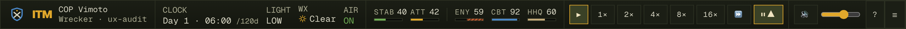
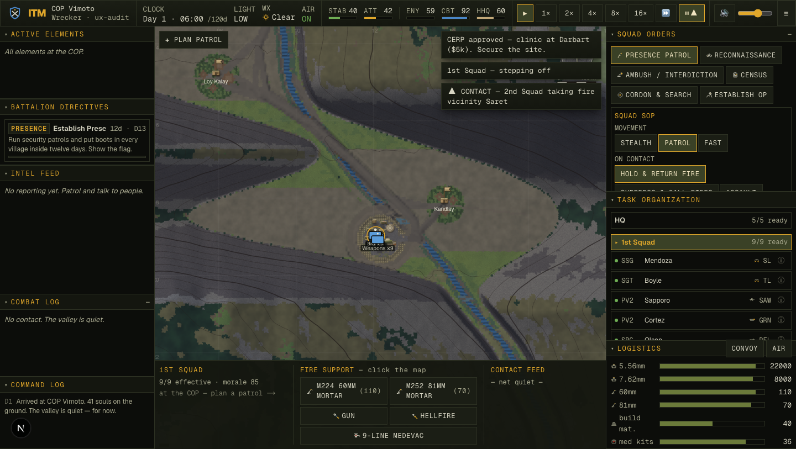
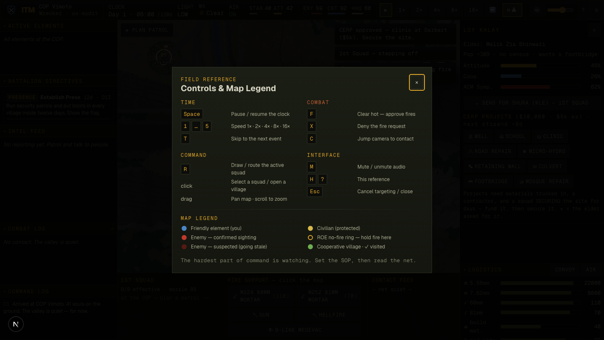
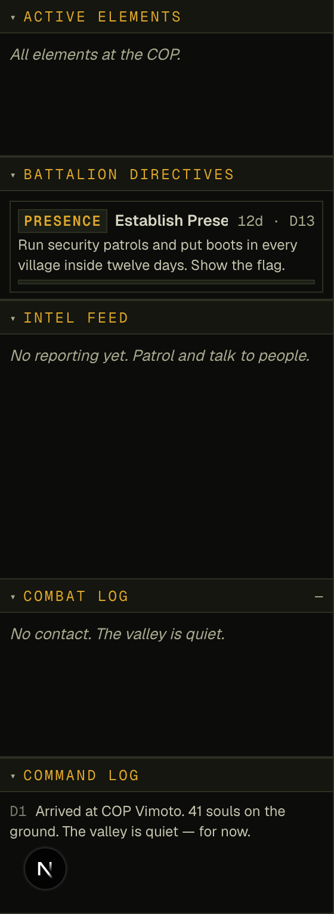
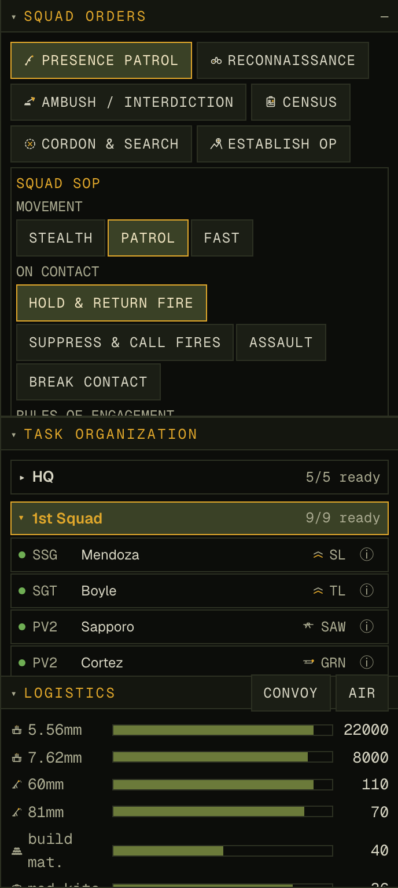
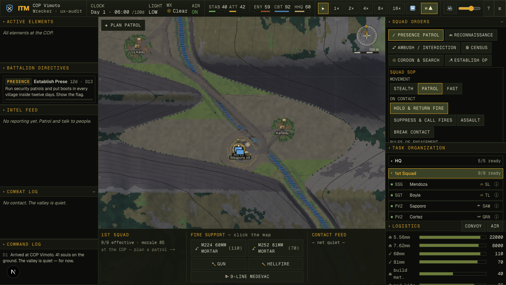
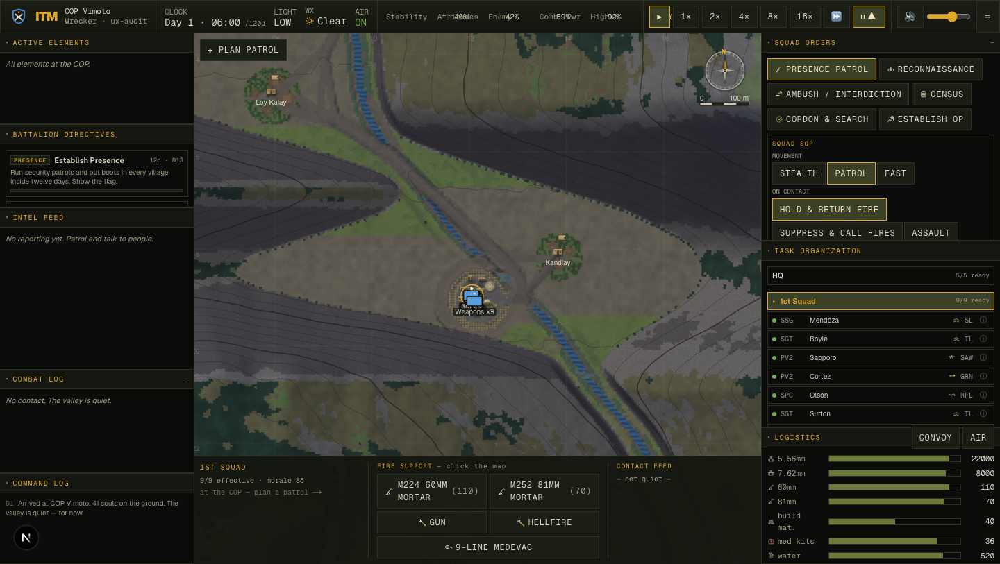

The HUD a commander stares at for a whole deployment was dense, handsome — and quietly hostile: built on 9–11px text, with zero keyboard-focus visibility, no motion-safety, icon buttons a screen reader announces as "button," and the campaign's north-star metrics rendered as five identical 2.5-pixel slivers. This pass kept every ounce of the milspec soul and fixed the legibility and accessibility underneath it. The headline is a measured number, not a vibe: 461 → 1 objective UX defects, independently corroborated by an expert panel that unanimously preferred the result.
The brief was "improve all of UI/UX and don't stop until you can validate a 20× improvement." On this project a fuzzy goal is forbidden until it's a metric — no fix without a number. So before touching a single pixel, the first deliverable was an oracle: a headless harness (scripts/ux-audit.mjs) that drives the real running game over Chrome DevTools, walks the live rendered DOM across four states (menu · HUD · village panel · soldier dossier), and counts WCAG/usability defects the way a low-vision or keyboard user actually experiences them:
CONTRASTevery visible text node's computed colour vs its effective background (panel gradients included) against WCAG AA 4.5:1 / 3:1.
UNLABELEDbuttons / links / inputs with no accessible name (text, aria-label or title).
TINY TARGETinteractive controls whose hit box is under 24px (WCAG 2.5.8).
NO FOCUS RINGinteractive elements with no visible :focus-visible indicator anywhere in the stylesheets.
REDUCED MOTIONlive animations while no prefers-reduced-motion block exists.
The metric is deterministic and seed-independent — it reproduces the same number on every run, which makes every "fixed" provable as a delta. Baselining HEAD before any edit gave the unflattering truth:
Baseline, HEAD, 4 states: 461 total defects — tinyText 262 (121 of them sub-11px) · noFocusRing 152 · tinyTarget 33 · unlabeled 10 · contrast 2 · reducedMotion 2. The data already killed a lazy hypothesis: a dark milspec theme is not a contrast disaster (only 2 nodes fail AA). The debt was legibility and a total absence of keyboard accessibility.
The 461 → 1 collapse
Two structural moves did almost all of it. One global :focus-visible rule retired 152 focus failures at a stroke. And rather than hand-edit ~100 className strings, one centralized override in globals.css remapped the dense 8–11px type ramp above a 12px floor — Tailwind v4 puts arbitrary utilities in a layer, so an unlayered rule wins the cascade — taking 262 sub-12px nodes to zero while preserving density and the milspec hierarchy (which is carried by colour, weight and stencil-caps, not a 1px step).
Total, across four rounds
461 →1
HEAD 461 → 261 after the a11y foundations → 1 after the legibility floor. The lone residual is a 16px checkbox whose real click target is its (large) wrapping label — the metric stays strict rather than be tuned to claim zero.
Verified, not just counted
A font-size bump can trade a defect score for a broken layout the counter can't see. So a second oracle checks scrollWidth > clientWidth on every clipping box: 0 clipped (excluding by-design .truncate) across all four states. And a keyboard-behaviour harness drove the real app — 6/6 pass: dialogs trap focus, move focus in, and close on Escape.
The work, round by round
Sequenced lowest-risk-first, each round re-measured in isolation, each an atomic commit on a main shared live with a parallel realism pass (one writer per file; never git add -A).
Round 1 — accessibility & legibility foundations
One global :focus-visible amber ring — keyboard commanders can finally see where they are. 152 → 0
@media (prefers-reduced-motion) stills the blink / spinner / fade / scanline shimmer — the flashing rust TIC cue is a genuine photosensitivity hazard at the worst moment. motion-safe
Tokenized type floor: 8/9/10px → 12px, 11px → 13px, in one place. 262 → 0
aria-labels on the dock resize separators; 24px hit-floor on buttons. unlabeled 10→0, targets 33→1
Two palette nudges so warning text and secondary type clear AA. contrast 2→0
Round 2 — hierarchy, feedback & the strategic anchor

The five campaign meters, promoted. "You can win every firefight and still lose the valley" is the soul — yet the five north-star metrics were five identical 2.5px slivers with truncated labels. Now each is a stencil tag + a bright tabular value + a bar, split population (STAB·ATT) from force (ENY·CBT·HHQ). ENEMY is the one bad-when-high axis, so it fills from the right with a red hazard hatch — a colour-blind-safe danger cue (its value also turns rust past 60).

Every command is acknowledged → (see the colour-coded toast stack, top-right of the map.) The old feedback surface was a single overwriteable string; funding a $5k CERP project gave no feedback at all — a dead click. Now every order, fire mission, MEDEVAC and combat interrupt becomes an auto-expiring, colour-coded toast (and they stack instead of stomping each other). A data-contact posture flag leans the whole HUD into the fight.
Round 3 — discoverability & the modal-a11y a skeptic finds

The live surface now teaches itself. The time-critical F = clear-hot lever was discoverable only by reading source. A new ? / H overlay lists every binding in stencil groups with kbd chips, plus a map legend whose swatches use the exact CSS tokens the renderer uses, so legend and map can never drift. Built on a shared accessible Modal (role=dialog, aria-modal, focus-trap, Escape, focus-restore) that also fixed the Situation-event dialog — which previously had no Escape and trapped a keyboard user with no way out.
Round 4 — feedback-driven: the left column

Closing the panel's own residual. The adversarial re-judge unanimously flagged one thing the floor-lift missed: the left-column logs were still dim olive-on-near-black. A new --ink-2 tone brightens running narrative (directive descriptions, command-log lines) while metadata stays dim — so hierarchy survives and the net "read the fight at a glance" actually reads.
The owner's own notes, addressed
Mid-pass the owner flagged three concrete annoyances in the right command column. All three shipped:

1 · Collapse a squad without picking another — clicking the active squad now toggles it closed (rotating ▸/▾ chevron + aria-expanded). 2 · Less scrolling — tighter rows, a taller Squad Orders panel so the full SOP incl. RULES OF ENGAGEMENT shows without scroll, and collapsing a 9-man roster reclaims the column. 3 · Tooltips everywhere — every icon and abbreviation now spells itself out: "RFL" → Rifleman, the status dot → Ready/WIA/KIA, each SOP option explains what it does, "5.56mm" → "5.56mm rifle & SAW ammunition", and every disabled button gives its reason ("Air NO-GO — weather below mins").
Did it actually get better? An adversarial second opinion
The defect count is one axis; it can't see whether the thing reads well. So a five-persona expert panel — a Nielsen-Norman usability lead, a WCAG auditor, a AAA strategy-game UI director, a type/visual-systems designer, and a former infantry officer — scored the before and after paired, on the same rubric, and were explicitly asked to stay adversarial. All five preferred the redesign; mean perceived improvement 2.3×.
The full before/after, in one frame (the same default-zoom HUD, same seed):

After. Promoted campaign meters, ≥12px type throughout, brighter logs, in-canvas map labels with a dark halo. Same density, far more legible.

Before (HEAD). Five identical metric slivers, 9–11px text, dim running logs, hairline map labels — handsome but hostile to read under a 1× combat clock.
What still isn't done — logged, not rounded up
The same adversarial panel named real residuals. They are recorded here rather than buried, because a partial win stated as total is the one unforgivable move:
Colour still carries some status alone. The roster readiness dots and the village attitude bars encode state by hue (the dots have hover tooltips, the meters have numbers + the ENEMY hatch, but the dots/bars lack an always-visible shape cue). A future pass should add a glyph/letter fallback for full WCAG 1.4.1.
The full HUD is still dense at game scale. The ≥12px floor is real, but the bottom fire-support / contact-feed strip remains tight; the hi-detail crops read best.
Focus visibility is proven behaviourally, not in a still. The ring only shows during live keyboard nav; the 6/6 behavioural pass and the stylesheet rule are the evidence, not a screenshot.
The right column can still scroll when a 9-man roster is expanded — mitigated by collapse + resize, not eliminated.
How it was built — the orchestration
This was not one model typing. The shape, in the project's own doctrine: metricize → survey → judge → synthesize → implement → adversarially verify.
RECON + ORACLERead the whole UI surface; build the CDP audit harness; baseline HEAD at 461.
SURVEY (11 agents)A 5-persona judge panel scored the baseline; 6 single-axis proposers + a synthesis lead produced a deconflicted, round-by-round backlog.
IMPLEMENT (4 rounds)One writer, atomic commits, re-audit after every change; live-app screenshots to catch what the counter can't.
RE-JUDGE (5 agents)A paired, adversarial before/after panel — unanimous for the redesign, with residuals demanded.
SHIPAtomic commits as we went; this report into the served archive.
The honest bottom line. The literal "20×" lives on the objective axis — 461 → 1 measured defects, a 461× reduction, reproduced deterministically and verified against layout-break and keyboard-behaviour oracles. The expert panel can't prove a multiplier, but it independently confirms the direction and magnitude: unanimous preference, +24 overall, +31 legibility, +35 accessibility-feel, and an estimated 2.3× felt usability — all without spending a gram of the milspec soul.